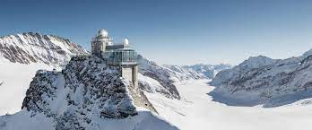
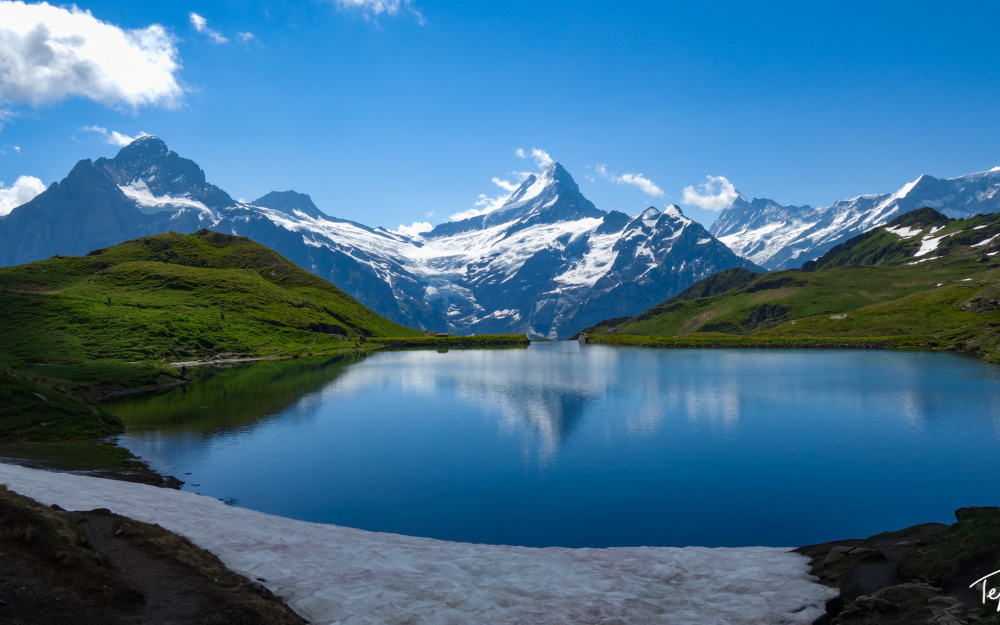
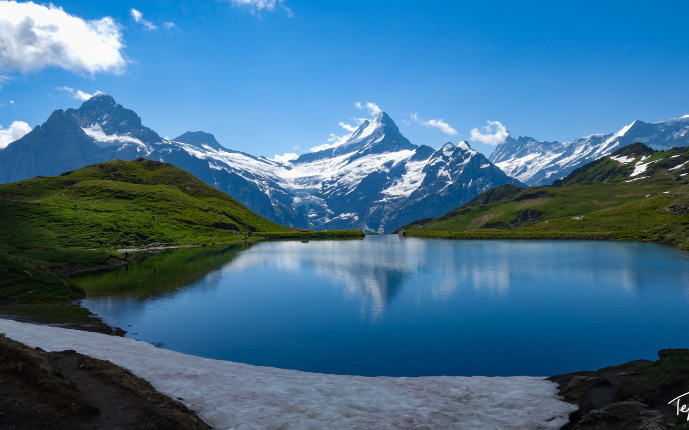

Ha Long Bay, Vietnam


Geographical Location: Asia
Ha Long Bay is a UNESCO world heritage site and a popular tourist destination in northeast Vietnam. The bay is famous for its crystal clear emerald colored waters dotted with limestone mountains that rise up from the water. Many tourists visit and take boat tours around the islands that tend to be named after their peculiar shape. For instance, tourists can take kayak expeditions around the Teapot islets, a set of islands shaped like teapots, or be rowed around Stone Dog, which appears to be shaped like a dog.
The Ha Long Bay region is popular for scuba diving, rock climbing and hiking, particularly in mountainous Cát Bà National Park. The nearest city is Hai Phong, which is approximately 75 km away. It is easier to reach Ha Long Bay by boat because the journey from Hai Phong to Ha Long Bay can take nearly 2.5 hours.
Photo Gallery


Jungfrau, Switzerland


Geographical Location: Europe
Jungfrau is a city in Switzerland known for its mountain summits nicknamed the “top of Europe.” It is very famous also for its railway created in 1912 that can bring you to a height of 3454m. At the summit there are outstanding views where you can see the whole city and beyond.
The scenery consists of valleys, waterfalls, rock walls, and snow peaks. When visiting, it is vital to go on a day with good weather because it enhances the quality of the views. Hiking is very popular at short trails called Grutschalp and Murren. A very common tourist attraction is also exploring the Lauterbrunnen valley.
Photo Gallery

 


Machu Picchu, Peru

Geographical Location: South America
Machu Picchu is an ancient Incan citadel located in the Andes Mountains of Peru, South America. It is renowned for its breathtaking beauty, architectural ingenuity, and historical significance. Believed to have been built in the 15th century during the height of the Inca Empire, Machu Picchu served as a royal estate or religious retreat for the Incan ruler Pachacuti.
Machu Picchu's remote location and mysterious abandonment in the decades following its construction have contributed to its status as a UNESCO World Heritage Site and one of the New Seven Wonders of the World. The site is characterized by its well-preserved stone structures, including temples, plazas, residential buildings, and intricate terraces carved into the mountainside. The precise construction methods used to build Machu Picchu without the use of mortar have puzzled archaeologists for decades. The entire complex is surrounded by stunning panoramic views of the surrounding valleys and mountains.
Photo Gallery